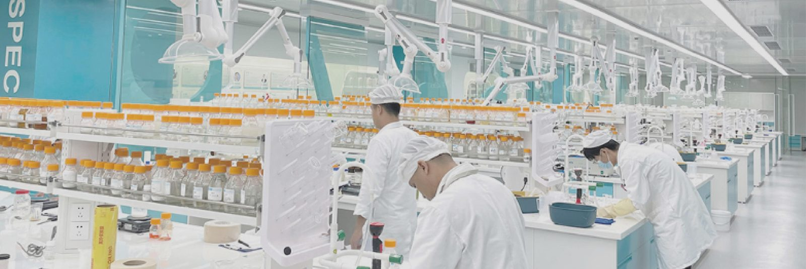

How does a private label skincare order work?
In six steps: consultation, formula and sampling, pilot and approval, mass production, QC and testing, packaging and delivery. You approve the formula and the packaging before bulk production starts. Every order is sampled and customised to your brand’s requirements — there are no standard off-the-shelf products. Most orders are semi-custom: start from a proven formula in our 10,000+ library, then adjust it to your brand. Every order starts at MOQ 500–1,000 units per SKU, and the price is quoted per order — there is no fixed price on this website.

Real factory and laboratory photos are added when available — no stock or third-party factory photos are used on this site.
Consultation
Share your goals, target market and budget — we advise on format, formula and compliance.
Formula & Sampling
Every brand gets its own formula. Start from our 10,000+ formula library, then our lab develops a version made for your brand only — and samples it for your approval. No off-the-shelf products; exclusive formulas are a standard service here — formula, variant, or market exclusivity, confirmed per order.
Pilot & Approval
Small-batch pilot production, with stability and packaging-compatibility tests. The pre-production sample (PPS) is approved by you in writing before mass scale-up.
Mass Production
Automated GMP lines produce your order with strict in-process controls.
QC & Testing
Every batch is tested for potency, microbiological testing and heavy metals before release.
Packaging & Delivery
Custom packaging, labeling and global freight to your warehouse, on time.
What each step delivers
| Step | What happens | What you approve |
|---|---|---|
| 1. Consultation | Goals, target market and budget; format, formula and compliance advice | Direction confirmed |
| 2. Formula & Sampling | Every brand gets its own formula. Start from our 10,000+ formula library, then our lab develops a version made for your brand only — and samples it for your approval. No off-the-shelf products; exclusive formulas are a standard service here — formula, variant, or market exclusivity, confirmed per order. | Sample confirmed |
| 3. Pilot & Approval | Small-batch pilot, stability & packaging-compatibility tests, PPS written approval | Pilot confirmed |
| 4. Mass Production | Automated GMP lines with strict in-process controls | Mass production start |
| 5. QC & Testing | Every batch tested for potency, microbiological testing and heavy metals | Release |
| 6. Packaging & Delivery | Custom packaging, labeling and global freight to your warehouse | Delivery details |
What is not fixed yet
To be confirmed: sample fee, sample lead time, number of sample revisions, per-step lead times, payment terms and bulk lead time. We do not publish figures we have not confirmed — they are confirmed per order on WhatsApp or by email.